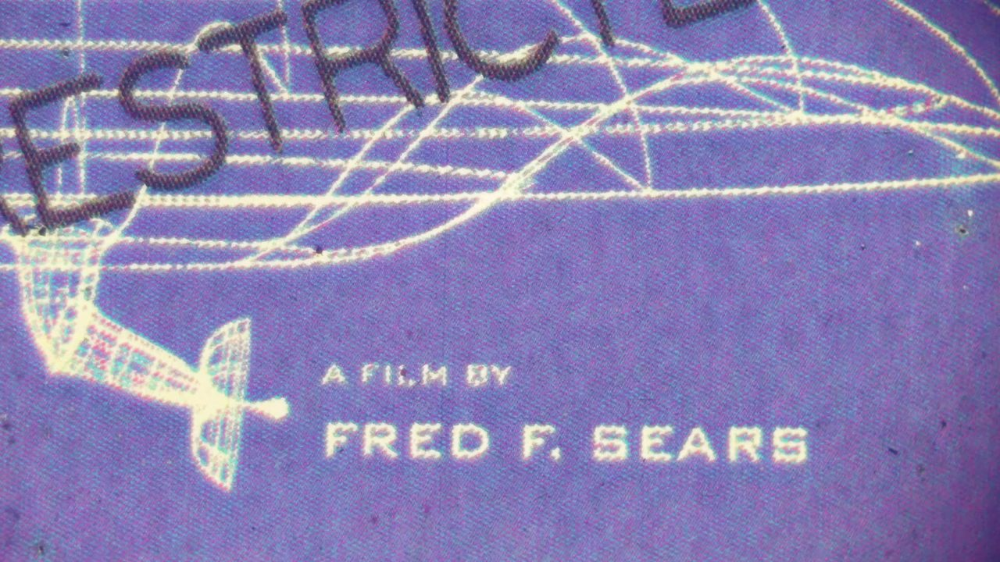
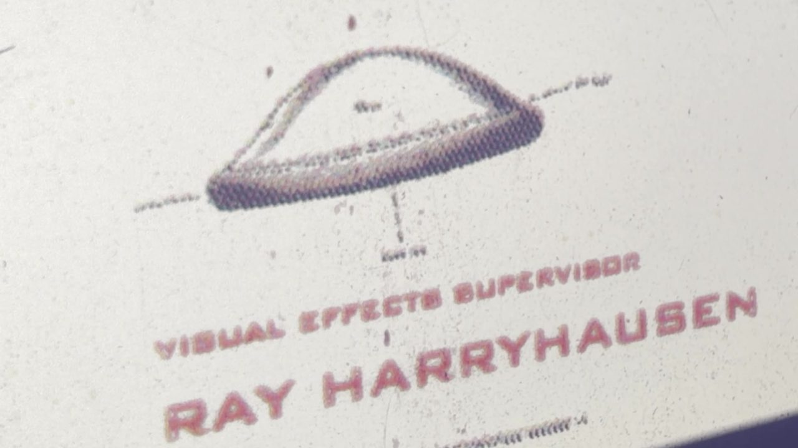
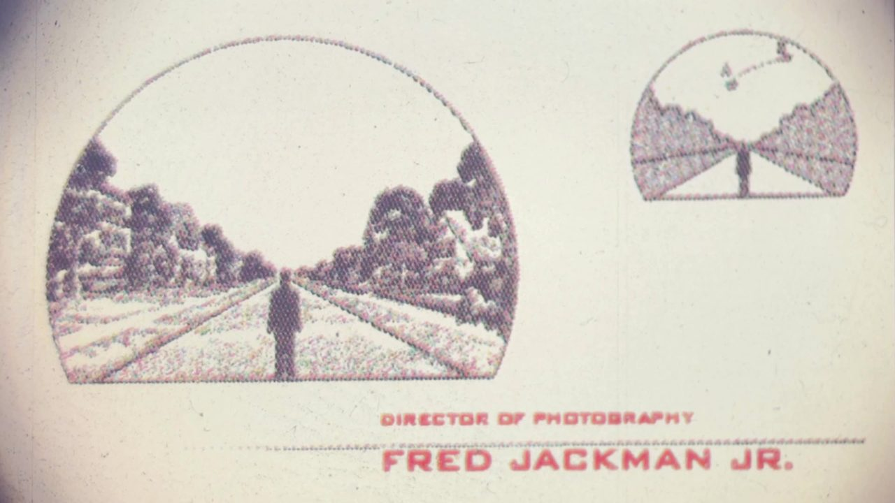
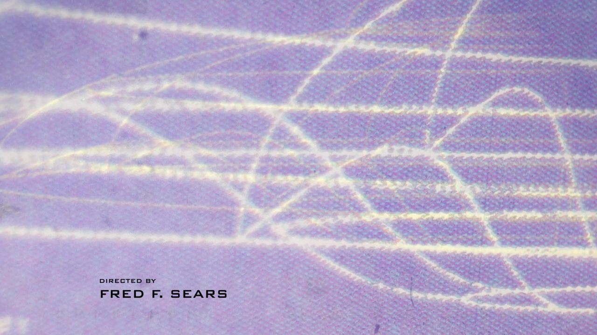
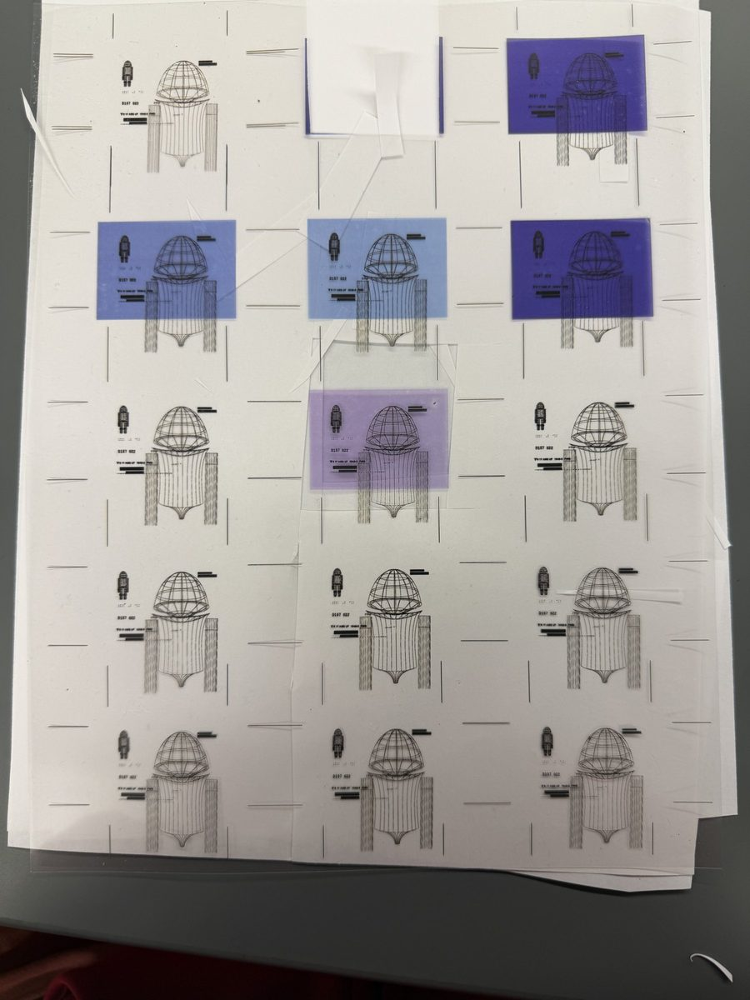
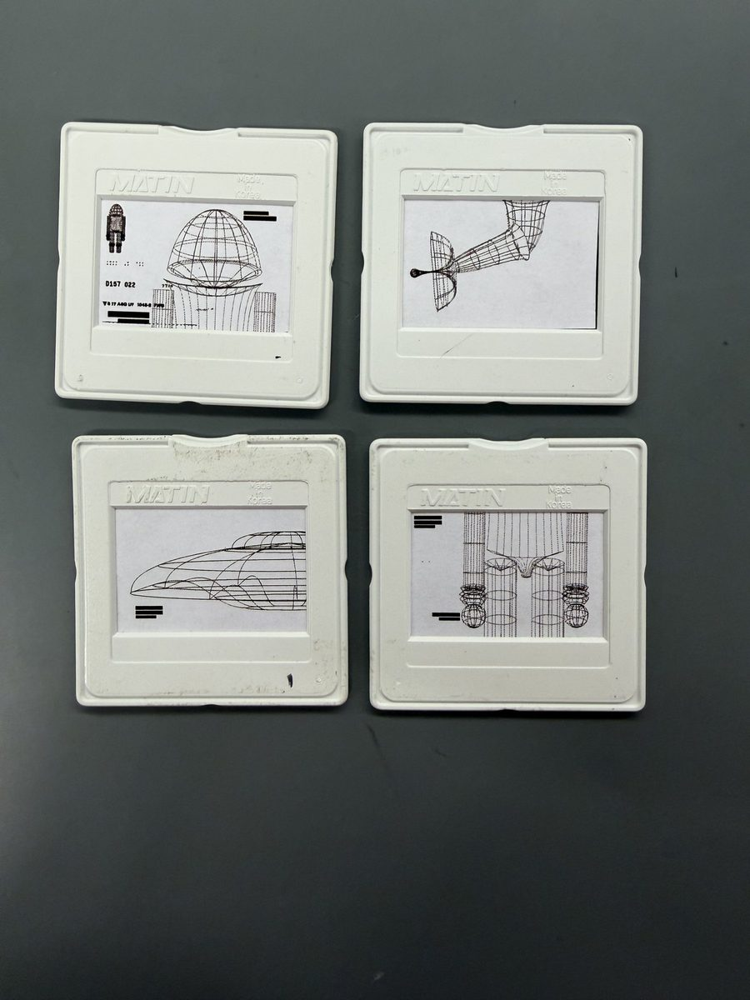
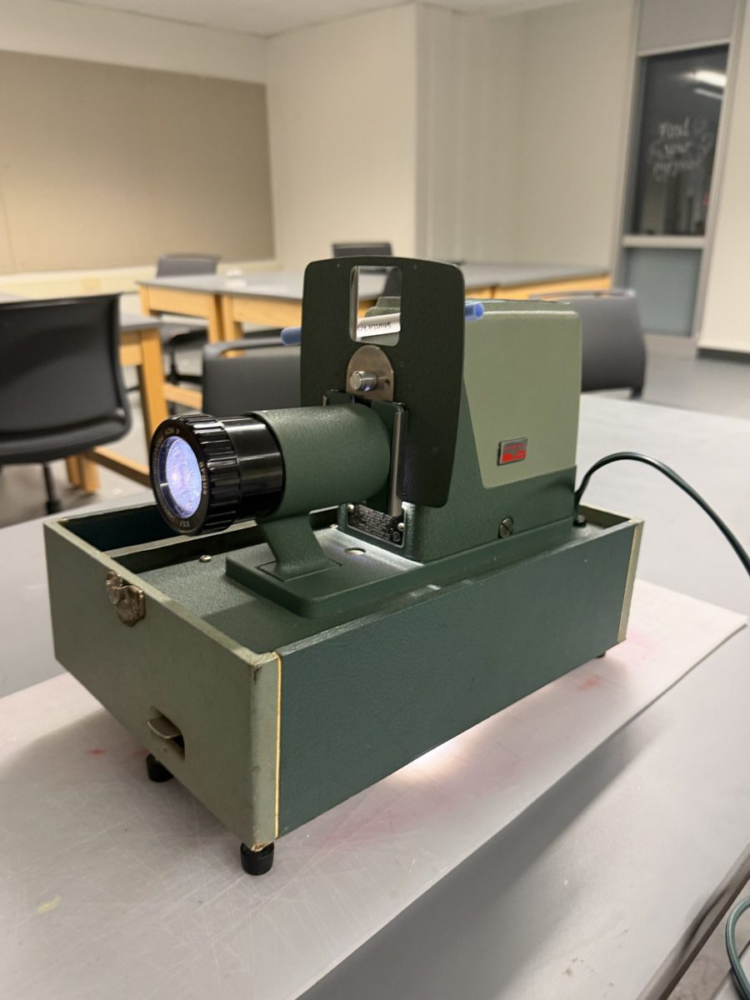
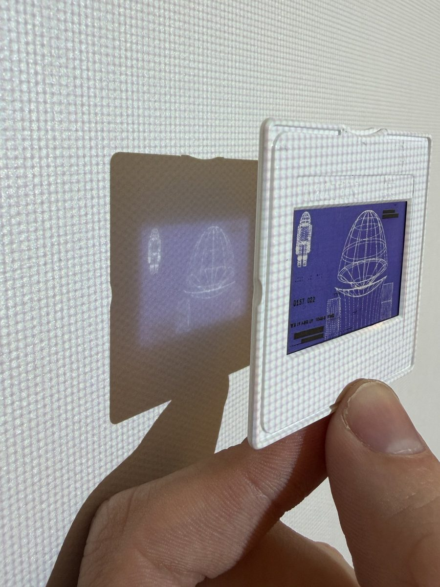
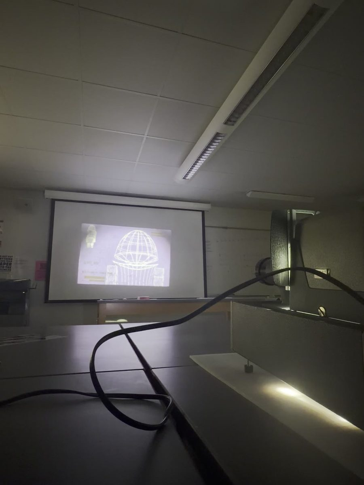

Final title sequence · 1 minute 38 seconds · color corrected
An opening title sequence for the 1956 film, made to play like a military briefing: blueprints and diagrams of what the government in the movie knows about the aliens and how they fly.




The brief asked for a title that could have been made when the film came out. So every frame went through a real slide projector.





Two earlier cuts from the reviews before the final.
Review 7 · Cut 01 · 1 minute 32 seconds
The first full edit. Before this, the title was storyboards and test projections.
Review 8 · Stabilized, with sound · 1 minute 39 seconds
The clips cut down and stabilized in After Effects, with sound added for the first time.
What changedCut 01 opens in the middle of a move across “Productions.” The final opens on the whole Columbia Pictures card. The clips were cut down and stabilized, and the final was color corrected.
MusicThe final title is set to “They’re Here!”, music composed by Frank Perez.
| Design | John Zwiers |
| Course | Motion Design 2, Loyola University New Orleans |
| Professor | Matt Normand |
| Film | Earth vs. the Flying Saucers, 1956, directed by Fred F. Sears |
| Research | Released U.S. government documents dated before 1956, used with permission, and screenshots from the film, redrawn |
| Made with | Adobe Illustrator, transparency paper, slide mounts, a 1950s slide projector, iPhone 17 Pro, Adobe After Effects |
| Typeface | BankGothic Md BT |
| Music | “They’re Here!”, composed by Frank Perez |